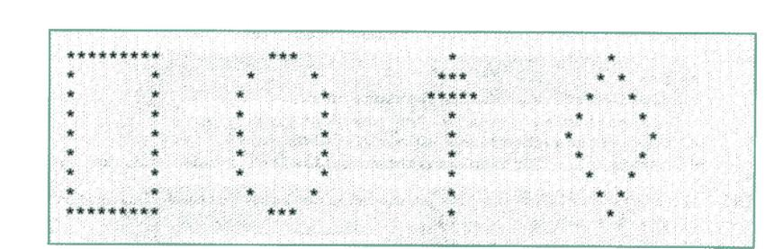

Getting started
with Java
Set up NetBeans, create programs, build a runnable JAR, print shapes, explore sales charts, and inspect a logic error.
Ts. Dr. Mohamad Hazim Md Hanif
Faculty Of Computer Science and Information Technology
Universiti Malaya
The attached source is titled “Lab 1: Getting Started with Java”. It is assigned to Week 2 here. The original PDF and project names L1Q2, L1Q3, and L1Q4 remain unchanged.
NetBeans and JDK 25
Use a NetBeans version that supports Java 25. Apache NetBeans 28 is a documented compatible option; an institution-provided compatible newer version is also suitable. The IDE runtime and your project platform are separate settings.
- Install JDK 25 and a compatible Apache NetBeans release. Check
java --versionandjavac --versionin a terminal. - In NetBeans, open Tools → Java Platforms, add the JDK 25 installation if needed, and select it for your project.
- For the introductory workflow, choose File → New Project → Java with Maven → Java Application. Create a small greeting program and run it.
- For Activities 2–4, follow the worksheet’s Ant project workflow: Java with Ant → Java Application. In project properties, set the Java Platform to JDK 25 and the source/binary level to 25. If 25 is unavailable, check the IDE version and platform registration.
MyProfile.javaYou write Java statements.
javacCompilation produces bytecode.
L1Q2.jarThe JAR contains classes and a manifest.
java -jarThe JVM launches the main class.
This checks the pasted text only. Also check javac and the NetBeans project platform separately.
Source video and current written guidance
The original worksheet points to this video: NetBeans Java Quick Start. Use the Java 25 settings in this lab if older material shows a different JDK.
Apache NetBeans: Java Quick Start with Maven
Apache NetBeans 28 compatibility information
A profile program and runnable JAR
Create an Ant Java Application named L1Q2. Set its main class to l1q2.MyProfile. Print a profile, then build and run it outside NetBeans.
Use fictional sample details for a JAR you exchange with classmates. The preview below stays in this browser and does not save profile fields.
Profile preview
Expected console output
Generated Java: MyProfile.java
Clean, build, and exchange
- Open Project Properties → Run and confirm
l1q2.MyProfileas the main class. - Right-click L1Q2 and choose Clean and Build. For this Ant project, inspect
dist/L1Q2.jar. Maven uses a different output layout, usuallytarget/. - Run
java -jar dist/L1Q2.jarfrom the project directory. Use a terminal for console output rather than relying on a double-click. - Exchange the sample-data JAR with a classmate and run it with Java 25. A JAR compiled with release 25 needs Java 25 or a compatible newer runtime.
java --version
java -jar dist/L1Q2.jar
jar --list --file dist/L1Q2.jarCommand-line build alternative
From a project folder containing src/l1q2/MyProfile.java, create build/classes and dist folders first. Then run:
javac --release 25 -d build/classes src/l1q2/MyProfile.java
jar --create --file dist/L1Q2.jar --main-class l1q2.MyProfile -C build/classes .
java -jar dist/L1Q2.jarFor a missing main manifest attribute, set the main class and rebuild. For UnsupportedClassVersionError, compare the compile target and the receiving machine’s java --version.
Shapes made from printed characters
Create L1Q3 and a main class l1q3.Shapes. Use output statements to reproduce a rectangle, oval, upward arrow, and diamond.

The editable pattern below is a nine-row monospaced reconstruction. Preserve leading spaces, column spacing, and line breaks. Compare shape structure rather than scanned pixel spacing.
Generated Java: Shapes.java
Product A sales: data becomes a chart
Create L1Q4. Display a bar, line, or pie chart from the worksheet’s data. The original dates are January–June 2016; no currency or unit is specified.
| Month | Amount |
|---|---|
| January 2016 | |
| February 2016 | |
| March 2016 | |
| April 2016 | |
| May 2016 | |
| June 2016 |
The browser chart uses the amounts in the table. Edit multiples of 100 from 0 to 10,000 to test the data. All-zero amounts cannot form a pie.
A bar chart compares monthly amounts. A line chart shows change over time. A pie chart shows each month’s share of the six-month total. The bar and line scales start at zero.
Starter Java: a console bar chart
This is a first implementation using text bars. One asterisk represents 100 units. Arrays and the loop are guided extensions beyond the Week 2 lecture.
package l1q4;
public class SalesChart {
public static void main(String[] args) {
String[] months = {"Jan", "Feb", "Mar", "Apr", "May", "Jun"};
int[] amounts = {2500, 1600, 2000, 2700, 3200, 800};
System.out.println("Product A sales, 2016");
System.out.println("Scale: one * represents 100 units");
for (int i = 0; i < amounts.length; i++) {
String bar = "*".repeat(amounts[i] / 100);
System.out.printf("%-3s %-32s %4d%n", months[i], bar, amounts[i]);
}
}
}Graphical Java bar chart with standard Swing
For a window with a graphical chart, use this reference model. Save as SalesChartWindow.java in package l1q4, then run l1q4.SalesChartWindow. It uses the standard java.desktop module, with no external chart library.
GUI classes, inheritance, drawing coordinates, and event dispatch are later topics. Use this model as a guided extension. Run it on a laptop with a graphical desktop.
package l1q4;
import java.awt.*;
import javax.swing.*;
public class SalesChartWindow extends JPanel {
private final String[] months = {"Jan", "Feb", "Mar", "Apr", "May", "Jun"};
private final int[] amounts = {2500, 1600, 2000, 2700, 3200, 800};
@Override
protected void paintComponent(Graphics graphics) {
super.paintComponent(graphics);
Graphics2D g = (Graphics2D) graphics.create();
g.setRenderingHint(RenderingHints.KEY_ANTIALIASING,
RenderingHints.VALUE_ANTIALIAS_ON);
g.setFont(new Font("SansSerif", Font.PLAIN, 16));
g.setColor(Color.DARK_GRAY);
g.drawString("Product A sales, January-June 2016", 60, 35);
int baseline = 320;
// Fixed scale: 3500 units fit in 245 pixels.
for (int tick = 0; tick <= 3500; tick += 500) {
int y = baseline - tick * 245 / 3500;
g.setColor(new Color(220, 230, 240));
g.drawLine(60, y, 690, y);
g.setColor(Color.DARK_GRAY);
g.drawString(String.valueOf(tick), 10, y + 5);
}
for (int i = 0; i < amounts.length; i++) {
int x = 80 + i * 100;
int height = amounts[i] * 245 / 3500;
g.setColor(new Color(23, 93, 176));
g.fillRect(x, baseline - height, 60, height);
g.setColor(Color.DARK_GRAY);
g.drawString(months[i], x + 12, baseline + 25);
g.drawString(String.valueOf(amounts[i]), x + 5, baseline - height - 8);
}
g.dispose();
}
public static void main(String[] args) {
SwingUtilities.invokeLater(() -> {
JFrame frame = new JFrame("Product A sales");
frame.setDefaultCloseOperation(JFrame.EXIT_ON_CLOSE);
SalesChartWindow chart = new SalesChartWindow();
chart.setBackground(Color.WHITE);
chart.setPreferredSize(new Dimension(730, 390));
frame.add(chart);
frame.pack();
frame.setLocationRelativeTo(null);
frame.setVisible(true);
});
}
}After running your chart, explain why May is the highest month and June is the lowest. Confirm the plotted data matches the original table.
Pause, inspect, and correct
Use the NetBeans debugger to inspect values before accepting a program’s result. A breakpoint pauses before its line executes.
- Create a small Java application using the DebugPractice example below. Predict the total for 3 items at 2.50 each.
- Set a line breakpoint on the total calculation by clicking its editor gutter. Start Debug Project.
- Inspect quantity and unitPrice in the Variables window. Use Step Over to execute the calculation, then inspect total.
- Compare 5.50 with the expected 7.50. Replace addition with multiplication. Restart debugging and repeat the check.
Browser debugger walkthrough
This models a fixed sequence of statements. It does not attach to NetBeans or execute Java.
| Variable | Value |
|---|---|
| quantity | Not assigned |
| unitPrice | Not assigned |
| total | Not assigned |
No output yet.
Java debugging practice
package l1q5;
public class DebugPractice {
public static void main(String[] args) {
int quantity = 3;
double unitPrice = 2.50;
double total = quantity + unitPrice; // Deliberate logic error
System.out.printf(java.util.Locale.US, "Total: %.2f%n", total);
}
}Use the reference above for a class named l1q5.DebugPractice. The added L1Q5 project name is a local practice choice; the worksheet only requests debugger practice.
Evidence of completion
- JDK 25 runtime and compiler checks, plus the correct NetBeans project platform.
- L1Q2 profile output and a runnable JAR, tested outside the IDE.
- L1Q3 shape output with aligned columns and correct rows.
- L1Q4 chart with all six original data values.
- A debugger explanation showing the incorrect and corrected total.
Checklist and reflection save in this browser only. They are not submitted to your lecturer. Export a copy if you need one. Follow your class submission instructions.
JDK 25 notes
The conventional public class and main method remain valid in JDK 25. These models use no preview features. Java 25 also supports compact source files with void main(), but explicit package names and classes keep this lab consistent with its Ant project and JAR tasks.
References
- Original lab worksheet
- Apache NetBeans Java Quick Start
- NetBeans packaging and executable JAR guidance (older examples; use JDK 25 settings here)
- NetBeans debugging workflow
- JDK 25 javac command
- JDK 25 jar command